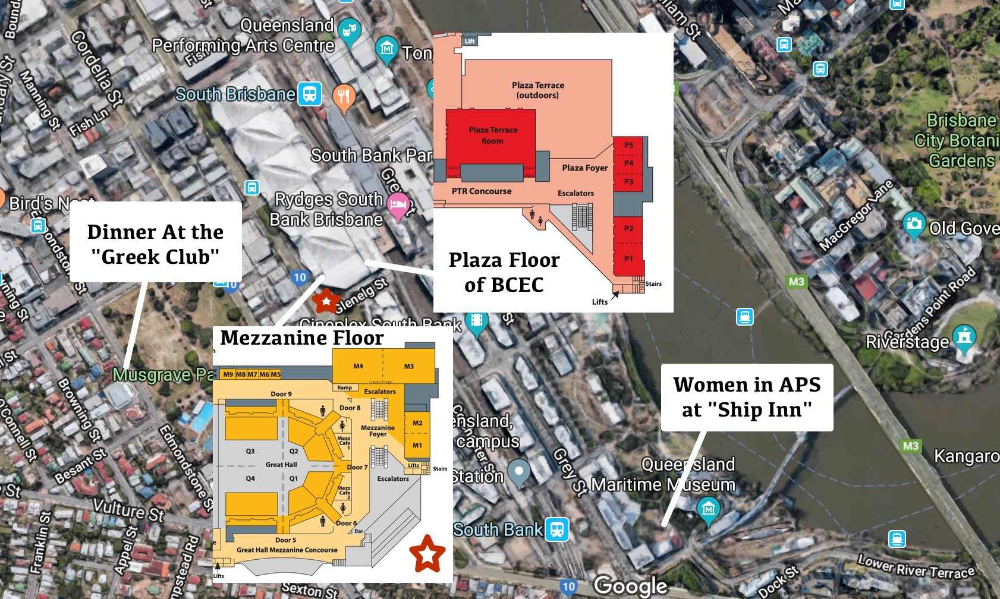

The main conference venue is the Brisbane Convention & Exhibition Centre (BCEC). The conference dinner will be held at The Greek Club and the Celebration of Women in Applied Probability at The Ship Inn.

Detailed directions for walking from the BCEC to the Ship Inn for the Celebration of Women in Applied Probability event can be found here.
Directions for walking from the BCEC to the Greek Club for the Conference Dinner can be found here.
General information on Brisbane's public transport can be found here.
Please be aware that laser pointers over 1 milliwatt power rating have been banned in Australia. Further details on this as well as information on other items that cannot be brought into Australia can be found on the Australian border force website.
Information on power plugs/outlets used in Australia can be found here.
There are two main public transport options between UQ and BCEC. The quick option is bus route 66 from UQ Lakes to South Bank Busway Station. The scenic option is the City Cat ferry from UQ St Lucia ferry terminal to South Bank 2 ferry terminal. Payment by cash is possible on the City Cat ferry, however for busses it is recommended to use go card.